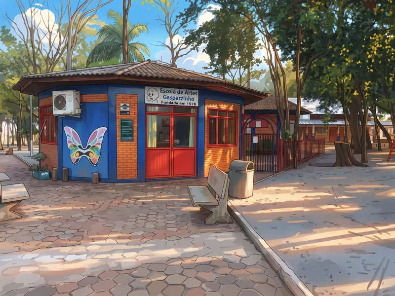

Conhecer o espaço →INFÂNCIA · ARTE · EDUCAÇÃO
Escola Municipal de Artes Gasparzinho
Uma instituição pública de ensino em Palotina, Paraná, voltada ao desenvolvimento artístico, cultural e educacional de crianças.
ARTE DESDE A INFÂNCIA
Um espaço dedicado à formação artística e cultural das crianças do município.
INFORMAÇÕES SOBRE A ESCOLA
Consulte o Departamento de Cultura para confirmar endereço, atendimento e informações sobre as atividades da escola.